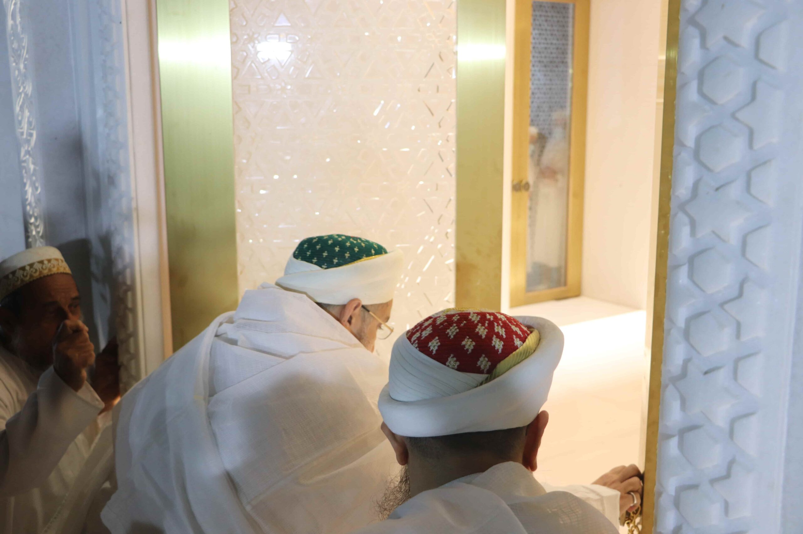
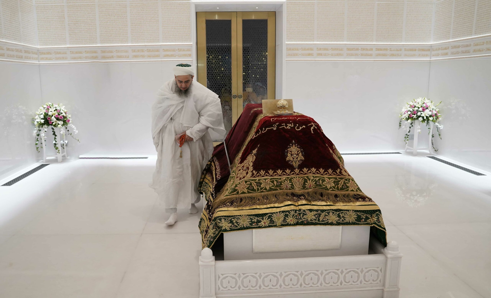
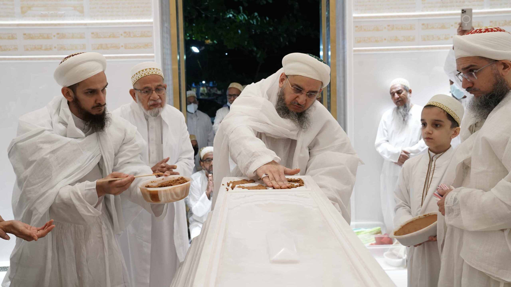

نَصْرٌ مِّنَ اللَّهِ وَفَتْحٌ قَرِيبٌ وَبَشِّرِ الْمُؤْمِنِينَ
“Aid from Allah and victory is imminent, so give good tidings to the believers.”
Qur’an Majeed (Surah Saff: 13)



One truth, One legacy
When we pause to reflect upon the years after the wafaat of our beloved father Syedna Mohammed Burhanuddin RA and the ensuing fitnat perpetrated by the enemies of Dawat, we remember a time of tribulation, sacrifice, and uncertainty. However, through that overwhelming darkness, we remember Syedna Khuzaima Qutbuddin RA as a blazing light of true guidance. We remember him as an unwavering pillar of strength when faced with insurmountable odds. We remember him as our beloved father, the hablullah, the rope of Allah, to whom we clung on with true faith.
Today, his successor Syedna Taher Fakhruddin TUS carries forth the torch of haqq. In him, we see Qutbuddin Maula, and the endurance of his legacy. We remember the holy words of consolation spoken by Imam Moiz AS to Syedna Qaazi al-Nu'man RA upon the wafaat of Imam Mansoor AS:
“Your Maula has passed and your Maula remains. You will find in me what you found in him.”
We are witnessing the truth of this profound statement unfold before our very eyes. The successor of Syedna Khuzaima Qutbuddin RA, his true fath-e-mubeen, the successor of all past Duat Mutlaqeen, the vicegerent of the Fatimid Imams, Syedna Taher Fakhruddin TUS performed the Iftitah of Raudat-un-Noor, the mausoleum of Syedna Qutbuddin on the auspicious occasion of his Urus, 1443H.
Iftitah program & functions
The seven day Iftitah program began on the 23rd of January with the Iftitah of the Mazar-e-Qutbi Iwan Complex. In the iftitah majlis, Syedi Mukasir Saheb AAB prayed Quran and Syedna Fakhruddin graced Mumineen with his words of doa and thanked Allah Ta’ala. It was indeed a momentous occasion for Mumineen to observe khatmul Qur’an majlis with Syedna Fakhruddin in the Iwan. Mumineen were beginning to see the fruits of the seeds of tireless khidmat that they sowed during Syedna Qutbuddin’s reign and the early years of Syedna Fakhruddin’s era. The next day (24th January), Syedna Fakhruddin TUS took the jadeed Misaaq of his beloved daughter Shehzadi Saarrah Bensaheba. Syedna TUS also took jadeed Misaaq of the farzando of Mumineen, and renewed the Misaaq of all Mumineen and Muminaat.
The following two days were a whirlwind of rejoice, remembrance, and pride. On the night of Syedna Qutbuddin’s RA Urus (25th January), Syedna Fakhruddin TUS performed Iftitah of Raudat-un-Noor. Mumineen from all over the world had traveled to Darus Sakina to witness this historic moment. As Syedna Fakhruddin stepped out of the lift into the sehen area of the Raudat complex, he paused to gaze at the magnificence of the Raudat Mubaraka, and then proceeded to preside over the khatmul Qur’an majlis in the sehen of the Roza overlooking the Yeoor Hills and the Sanjay Gandhi National Park. It was a truly surreal experience to be sitting in the shade of the Raudat Mubaraka, at the feet of Syedna Qutbuddin’s successor, Syedna Fakhruddin. Qasidas and marsiyas were prayed in Syedna Qutbuddin’s remembrance as Mumineen recounted his innumerable blessings. Syedna TUS recounted the great efforts expended by his brother, the qurrat-ul-ayn of Syedna Qutbdudin, al-Syed al-Ajal Shehzada Dr. Aziz Bhaisaheb Qutbuddin in leading the khidmat of the construction of Raudat-un-Noor and the Mazar in the majlis of the iftitah of the mazaar complex.
After the majlis, Syedna Fakhruddin performed the Iftitah of the Raudat Mubaraka. As he unlocked the crystal doors he recited the ayat presented at the top of this article, “Aid from Allah and victory is imminent, so give good tidings to the believers.” As we watched Syedna perform ziarat, our hearts were overcome with feelings of both sadness and rejoice. The grief of Syedna Qutbuddin’s wafaat was stirred anew, along with immense rejoice at the opening of this Raudat Mubaraka, a precious tribute to the revered status of Syedna Qutbuddin held in the hearts of his followers.
On the day of Syedna Qutbuddin’s Urus (26th January) Syedna Fakhruddin performed pur-josh waaz in Iwan–e-Fatemi in the Mazaar-e-Qutbi Complex. In the waaz Syedna Fakhruddin remembered Qutbuddin Maula and his innumerable blessings, and explicated seven meanings of the ayat “wa kalimatullahi hiyal-’ulya”. In shukur of Syedna Qutbuddin’s blessings, Syedna Fakhruddin gave the sharaf of haddiyyat to his two sons Shehzada Khuzaima Bhaisaheb and Shehzada Yusuf Bhaisaheb, bestowing upon them the laqabs of Shamsuddin and Najmuddin respectively.
On the fifth day (28th January), Syedna TUS prayed the Nikah of the daughter of Mazoon-ud-Dawat Syedi Abdeali Bhaisaheb Saifuddin AAB, Maryam baisaheba. Syedi Mazoon Saheb AAB hosted a shukur ziafat in which he recounted the barakaat and nazaraat of Syedna TUS upon him and Mumineen. A Bunayyaat and Shabab lunch program was also held in which Mumineen youngsters from all over the world met and mingled.
On the 29th of January, Syedna TUS led the first Jumoa ni namaz in Mazaar-e-Qutbi and took wasila mubaraka. The seven day program ended on the 30th of January with a program hosted by Madrasa farzando. Syedna TUS presided over the program, as Madrasa farzando prayed Quran and qasidas and gave presentations on the theme of jannat. At night, Syedna TUS presided over Syedna Qutbuddin Shaheed RA Urus Majlis.Mumineen mukhliseen hosted ziafats of Syedna TUS throughout the seven day program, and Mumineen were invited daily for salwaat jaman.
Syedna Qutbuddin’s Memory & Syedna Fakhruddin’s Futoohaat
Just as Syedna Qutbuddin RA was a refuge for us throughout our lives, so too is his Raudat Mubaraka, Raudat-un-Noor, today. We will continue to perform shukur for Qutbuddin Maula’s innumerable blessings throughout our lives. His memory is etched on our souls.
Indeed the Iftitah of Raudat-un-Noor is a clear sign of Syedna Fakhruddin’s upcoming Fath-e-Mubeen. May Mumineen take these glad tidings and rejoice. As Syedna Fakhruddin TUS emphatically expressed in his qasida:
بِنَصْرٍ عَزِيْزٍ وَفَتْحٍ مُبِيْنٍ * اِذَا شَاءَ مَوْلىَ الْوَرَى اَيَّدَا
If my Maula Imam-uz-Zaman wills it, he will grant me Nasr-e-azeez and Fath-e-mubeen, powerful support and clear victory.
May Allah Ta’ala grant Syedna Taher Fakhruddin a long life until the day of Qiyamat, and may he grant him a swift fath-e-mubeen. May the Imam’s Dawat, and the Mumineen residing in its haram-e-aamin continue to prosper under Syedna Fakhruddin’s cool shade, and the ever flowing nazaraat of Syedna Qutbuddin.